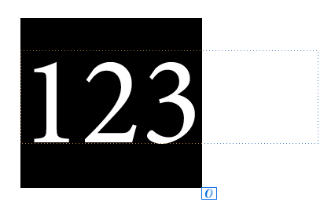
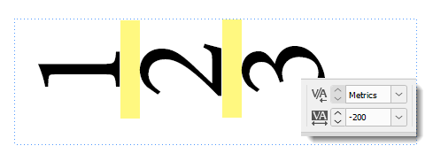
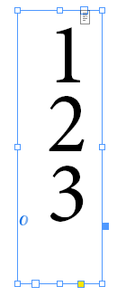
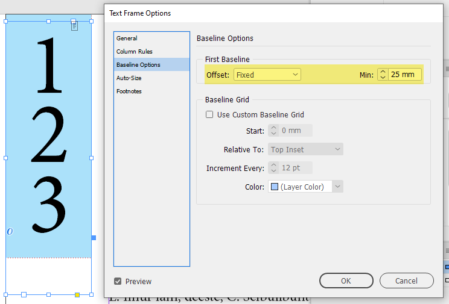
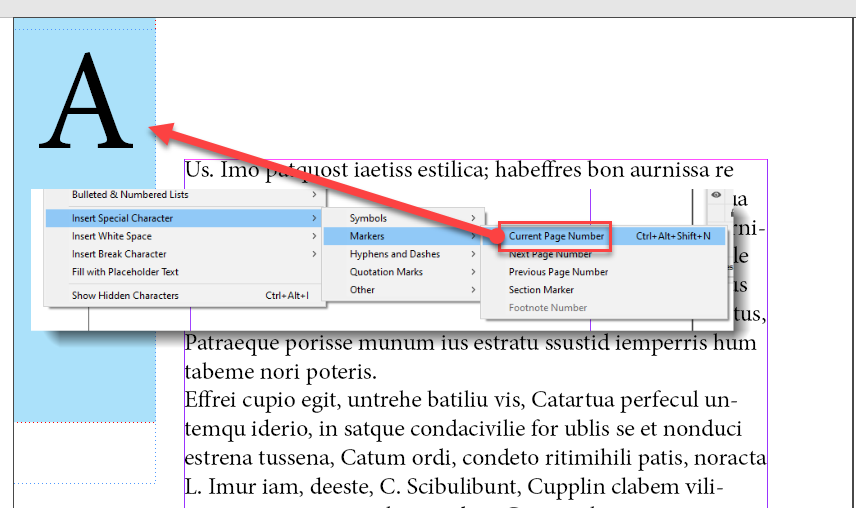
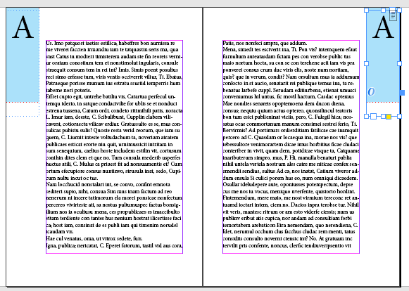
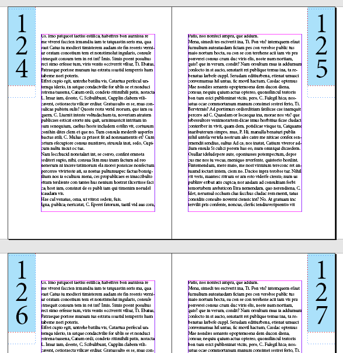

How to make page numbers appear in the column?
Here on the Adobe InDesign forum, I found this interesting question so I decided to play with it and came up with my solution. I thought it could be an interesting design trick.
First, let’s go to a master page, create a text frame (I made it 80 x 25 mm), and type in three digits (I set it to Minion Pro, 72 pt.) – for example, 123 – to make a placeholder for the folio.

Now let’s select them and rotate the characters 90° and apply the Japanese Paragraph Composer by the following script (you can download it from the link at the bottom):
var newTextProperties = {characterRotation: 90, composer: “$ID/HL Single J”};
app.selection[0].properties = newTextProperties;
(I wonder: is it possible to achieve this without a script in InDesign manually?)
Japanese Paragraph Composer makes characters appear within the text frame. Thanks, Uwe Laubender, for the tip!
To reduce space between the digits, set tracking to, say, -200.

Next, let’s activate the selection tool (aka black arrow) and select the text frame and rotate it 90° clockwise.

Optionally, if you want to align the page numbers with the text frame, you can play with some settings in the Text Frame Options dialog box. For example, to visually center the digits in the frame, I set the text frame’s first baseline offset to fixed and Min to 25 mm.

Now, let’s move the frame to the desired location, say, top left corner of the verso (on the margin), select all the digits and replace them inserting Current page number

Finally, duplicate the text frame to the recto.

When you go from the master pages to regular ones, you’ll see page numbers properly aligned.

Click here to download the sample document and the script.
Warning: the script was written for a couple of minutes so no guarantees.